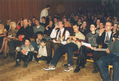
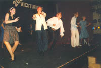
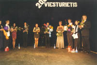
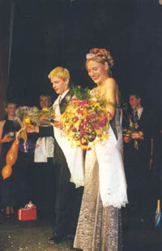
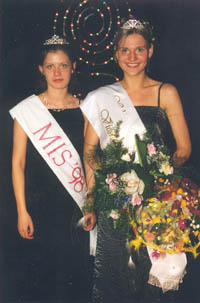
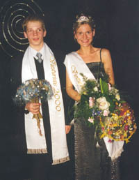
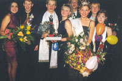

| vçsture | statistika | mâcîbas | darbinieki | absolventi | panâkumi | nodarbes | pasâkumi | saites | kontakti | |||||||||||||
Konkurss "Viesturiete un Viesturietis 2000" noslçdzies |
Nu sveiki mani mîïie! |
Viesturskolai piemît tâ specifika, ka ik pa laikam gribas tajâ atgriezties. Pçc ilgâka laika atkal esmu savâ vecajâ skolâ un man bija uzticçts tas pienâkums un gods veidot un vadît konkursu "Viesturiete un Viesturietis 2000". |
Tas notika 25.februâra vakarâ. Trîs stundu ðovs un uzvarçtâji tika nosaukti. |
Konkursanti tika vçrtçti pavisam 5 uznâcienos, kas tika veidoti kâ vienots ðovs "20.gadsimta zîmes". |
Lai izveidotu, kopumâ strâdâjâm apmçram mçnesi un, jâsaka, par 95% mums arî izdevâs iecerçtais. Kâpçc ne par visiem 100%? Tâdçï, ka nekas nav tik labs, lai nebûtu vçl labâk. Tâ vienmçr paliek kaut kas pçc kâ tiekties. |
Mçìinâjumi bija jauki un radoði. Konkursanti daudz labâk iepazina viens otru, ko varbût ikdienâ nebûtu varçjuði tik labi izdarît. |
Viòi gan niíojâs, gan smçjâs, gan baidîjâs, gan âkstîjâs, arîdzan centîgi darbojâs. Tas attaisnojâs un 25.februâra vakarâ mçs priecçjâm gan publiku un þûriju, gan paði sevi. |
Gribu teikt lielu paldies visiem tehniskajiem darbiniekiem, kâ arî pasâkuma atbalstîtâjiem: Valmieras Drâmas Teâtrim, Coca-Cola Ltd., a/s Laima, skaistumkopðanas salonam "Lîga", kâ arî salonam Diakonâta ielâ 4-3, fotosalonam Konica un i/u "Santîms". |
Manuprât, uzvarçtâji ir viòi visi, jo saòçma milzîgu publikas mîlestîbu un atbalstu. |
Viòi katrs ir neatkârtojama personîba - individualitâte, tâdçï nenovçrtçjami. |
Novçlu visiem Viesturieðiem apzinâtie un izjust, ka piederîba Viesturskolai padara mûs îpaðus, jo kâ teica Mis Viesturskola `94 Gita Bebrîte - mçs taèu esam kâ viena ìimene. |
Paldies Jums |
Nora |
Þûrijas locekïi |
Lîga Brence - skaistumkopðanas salons "Lîga" |
Atis Rozentâls - Valmieras Drâmas Teâtris - mûsu skolas absolvents |
Edgars Krûmiòð - skolas absolvents |
Zanda Þentiòa - skaistumkopðanas salons Diakonâta ielâ 4-3 |
Andris Stebers - skolas absolvents `98 gada skatîtâja simpâtija |
Ilze Âboltiòa - skolas absolvente `96 gada skatîtâja simpâtija |
Roberts Treijs - Coca-Cola Ltd. Pârstâvis, Mis un Misters Valmiera `99 finâlists. |
Uzvarçtâji |
Viesturiete 2000 - Zane Verovkina |
Viesturietis 2000 - Mârtiòð Mazkalns |
Skatîtâju simpâtijas - Valters Jonâts, Zane Verovkina |
Internet simpâtijas - Valters Jonâts, Aiva Strûja |
Coca-Cola Ltd. Simpâtijas - Arta Íîkule, Ritvars Lasmanis |
Fotosalona "Konica" simpâtijas - Arta Íîkule, Mârtiòð Mazkalns |
Skaistumkopðanas salona "Lîga" simpâtijas - Arta Íîkule, Ritvars Lasmanis |
Valmieras Drâmas Teâtra simpâtijas - Undîne Leite, Renârs Pâpe |
Koíetâkâ dalîbniece - i/u "Santîms" - Arta Íîkule |
|  |
|  |
|  |
|  |
|  |
|  |
|  |
|
© Valmieras Viestura vidusskola 2003 |